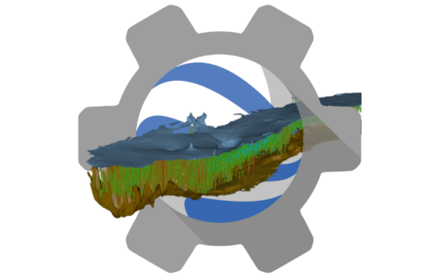

A basic assumption of the NPSAT approach is that the groundwater flow is steady state.
To derive a representative steady state solution it is important that the storage change is approximately 0.
The following plot below shows the monthly and yearly cumulative storage change based on the
CVHM and
C2Vsim hydrologic models.
Overall there is a significant decline in storage, however there are few periods where the storage change is very close to 0.
According to the CVHM, the longest recent period with zero storage change spans 21 years from 12/1977 to 4/1999, where the storage has been declined 35.5 mACFT with respect to year 1961.
However, there is a more recent period that spans 11 years from 12/1991 to 9/2003.
According to C2Vsim there is only one relatively long period with negligible storage change between 10/1992 and 4/2007.
For each of these periods we calculated the average inflows and outflows from the major sources which are the streams, the wells and the groundwater recharge. We observe that the differences of inflows and outflows between the two CVHM selected periods are almost negligible, while the sum of all flows from streams, wells and recharge, which is depicted as discrepancy in the plot bellow is very small for both periods indicating that no other water sources have any major controbution.
However the stresses are spread out thoughtout Central Valley in highly heterogeneous fashion.
